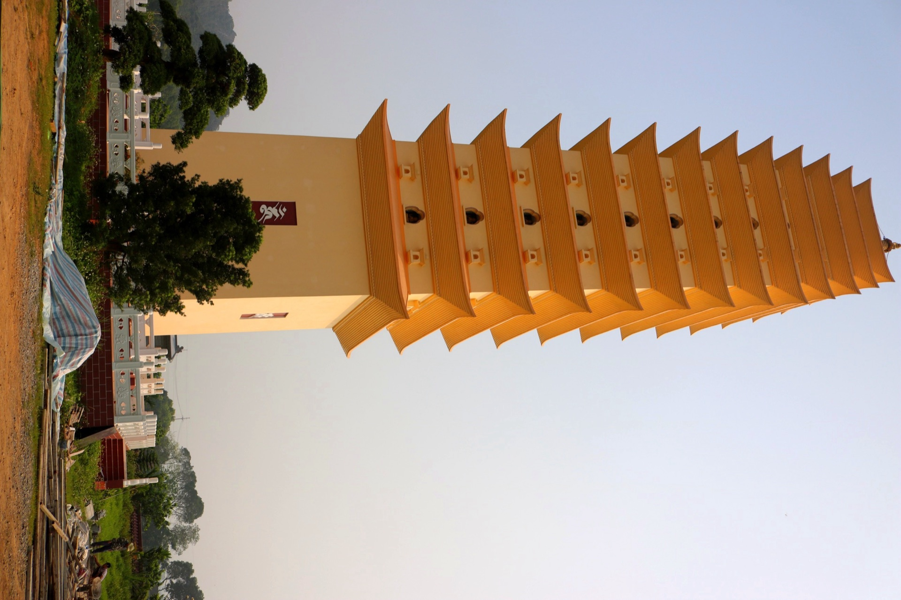

Loại hìnhTypeType
Di tích tâm linhSpiritual Heritage SitesSites de Patrimoine Spirituel

Chùa Đinh Long (tên chữ: Đinh Long Tự) là ngôi chùa cổ tọa lạc tại thôn Đồng Văn, mang trong mình lớp lớp dấu tích lịch sử trải dài từ thời phong kiến đến kháng chiến. Theo sử sách và văn bia, chùa được xây dựng từ thời vua Đinh Bộ Lĩnh — ban đầu là nơi dừng chân cầu nguyện quốc thái dân an trên đường dẹp loạn 12 sứ quân.
Qua nhiều thế kỷ, chùa được trùng tu lớn vào năm 1599 (thời vua Lê Kính Tông) và năm 1935. Đến năm 1898 (thời vua Thành Thái), nhân dân địa phương cúng bái ngôi chùa về chốn tổ Tùng lâm Hương Tích, mở ra giai đoạn trùng hưng với quy mô hơn 5 mẫu; năm 1926 tiếp nhận thêm một quả chuông đồng. Trong kháng chiến chống Pháp, chùa Đinh Long là căn cứ cách mạng quan trọng: kho thóc, xưởng công binh, bệnh xá, nơi in ấn tài liệu và đặc biệt là địa điểm cuộc họp Ban chấp hành Đảng bộ tỉnh Hà Đông năm 1948.
Dinh Long Pagoda (literary name: Dinh Long Tu) is an ancient temple nestled in Dong Van village, bearing layers of historical traces from feudal times to periods of resistance. According to historical records and steles, the pagoda was built during the reign of King Dinh Bo Linh — initially a stop for prayers for national peace and prosperity on his way to quell the rebellion of the 12 Warlords.
Over centuries, the pagoda underwent major renovations in 1599 (during King Lê Kính Tông's reign) and 1935. In 1898 (during King Thành Thái's reign), local people dedicated the pagoda to the ancestral site of Tùng lâm Hương Tích, initiating a revival phase spanning over 5 mẫu; in 1926, an additional bronze bell was acquired. During the resistance against the French, Đinh Long Pagoda served as a crucial revolutionary base: a granary, engineering workshop, infirmary, document printing site, and notably, the location of the Hà Đông Provincial Party Committee meeting in 1948.
La pagode Đinh Long (nom littéraire : Đinh Long Tự) est un ancien temple situé dans le village de Đồng Văn, portant des couches de vestiges historiques s'étendant de l'époque féodale à la résistance. Selon les annales et les stèles, la pagode a été construite sous le règne du roi Đinh Bộ Lĩnh — initialement un lieu de prière pour la paix nationale et la prospérité du peuple, sur le chemin de la répression de la rébellion des 12 seigneurs de guerre.
Au fil des siècles, la pagode a subi d'importantes restaurations en 1599 (sous le règne du roi Lê Kính Tông) et en 1935. En 1898 (sous le règne du roi Thành Thái), la population locale a dédié la pagode au site ancestral de Tùng lâm Hương Tích, inaugurant une phase de renouveau s'étendant sur plus de 5 mẫu ; en 1926, une cloche en bronze supplémentaire a été acquise. Pendant la résistance contre les Français, la pagode Đinh Long fut une base révolutionnaire cruciale : grenier, atelier de génie, infirmerie, lieu d'impression de documents et, notamment, le site de la réunion du Comité exécutif du Parti provincial de Hà Đông en 1948.
| Tham quan, chiêm báiVisit and offer prayers.Visite et recueillement. | Tự do vãng cảnh, dâng hươngFreely Explore & Offer IncenseExplorez librement et offrez de l'encens |
| Hướng dẫn tại chỗLocal GuidesGuides Locaux | Giới thiệu lịch sử chùa từ thời Đinh đến kháng chiếnDiscover the pagoda's rich history, from the Dinh Dynasty to the resistance wars.Découvrez la riche histoire de la pagode, de la dynastie Dinh aux guerres de résistance. |
| Tham quan di tích cách mạngExplore Revolutionary SitesExplorez les sites révolutionnaires | Nghe kể về căn cứ kháng chiến, họp Đảng bộ tỉnh Hà Đông 1948Listen to stories about the resistance base and the 1948 Hà Đông Provincial Party Committee meeting.Écoutez des récits sur la base de résistance et la réunion du Comité provincial du Parti de Hà Đông en 1948. |
| Giáo dục lịch sửHistorical EducationÉducation Historique | Phù hợp đoàn học sinh, đoàn thanh niên tìm hiểu lịch sử địa phươngIdeal for student and youth groups to explore local history.Idéal pour les groupes d'étudiants et de jeunes souhaitant explorer l'histoire locale. |
| Chụp ảnh kiến trúcCapture ArchitectureImmortalisez l'architecture | Công trình chùa và không gian xung quanhTemple complex and surrounding areaComplexe du temple et ses environs |


Chùa Đinh Long hướng tới phát triển thành điểm giáo dục lịch sử địa phương gắn với du lịch tâm linh — cách mạng, phục vụ cả đoàn học sinh, đoàn thanh niên và du khách quan tâm đến di sản. Định hướng tiếp theo bao gồm xây dựng nội dung diễn giải lịch sử chuyên sâu, hình thành bảng thông tin tại các điểm nhấn trong khuôn viên và kết nối với chương trình giáo dục địa phương của trường học trên địa bàn. Điểm đến Du lịch cộng đồng Mường Cốc, Xã Mỹ Đức – Thành phố Hà NộiChùa Đinh Long aims to develop into a local history education site linked to spiritual and revolutionary tourism, serving student groups, youth groups, and visitors interested in heritage. Future directions include developing in-depth historical interpretation content, installing information boards at key points within the grounds, and connecting with local educational programs in area schools. A Mường Cốc Community Tourism Destination, My Duc Commune – Hanoi City.Chùa Đinh Long vise à devenir un site d'éducation à l'histoire locale lié au tourisme spirituel et révolutionnaire, accueillant aussi bien les groupes scolaires, les groupes de jeunes que les visiteurs intéressés par le patrimoine. Les prochaines étapes comprendront l'élaboration de contenus d'interprétation historique approfondis, l'installation de panneaux d'information aux points clés du site et la connexion avec les programmes d'éducation locale des écoles de la région. Une destination de tourisme communautaire de Mường Cốc, commune de My Duc – ville de Hanoi.